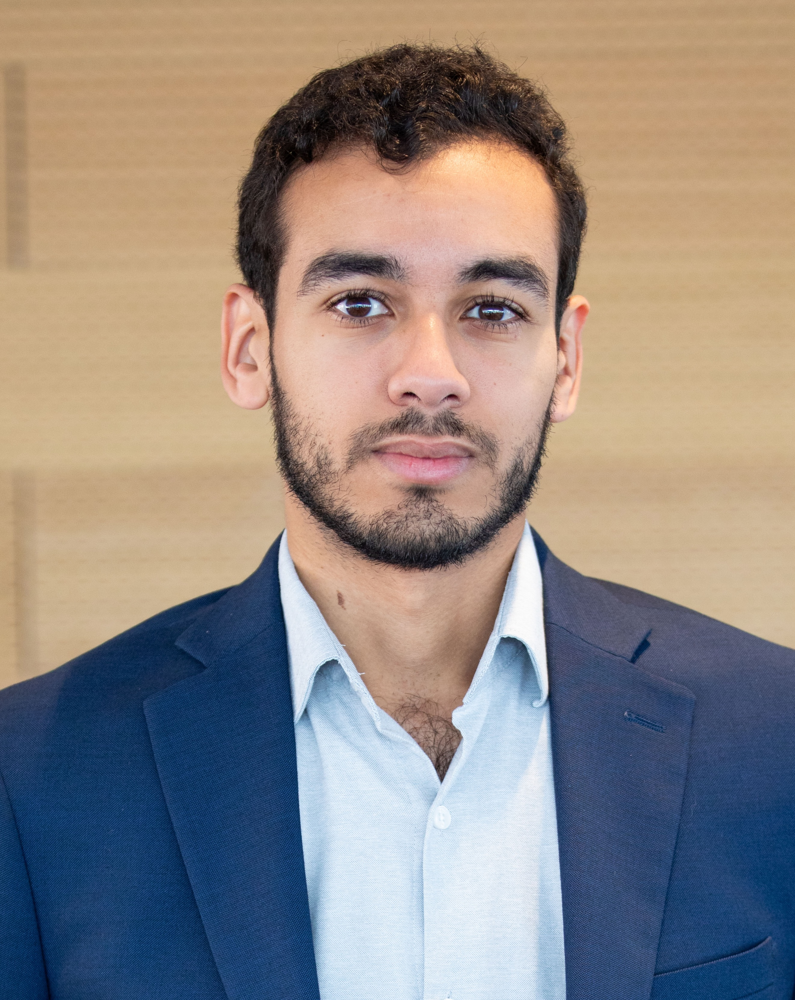

I am an assistant professor of business economics at the Africa Business School, Université Mohammed VI Polytechnique (UM6P). Prior to this, I was a policy researcher at Lyft. I obtained a PhD in financial economics from the Graduate School of Business at Stanford University.
I study the links between household finance and urban economics. In particular, I'm interested in how urban policy can shape household financial decision making. I am also generally interested in how households make savings decisions. I study how behavioral deviations from benchmark economic models can impact household ability to borrow, save and self-insure against risk.
I can be reached at bilal.islah@um6p.ma
|
|